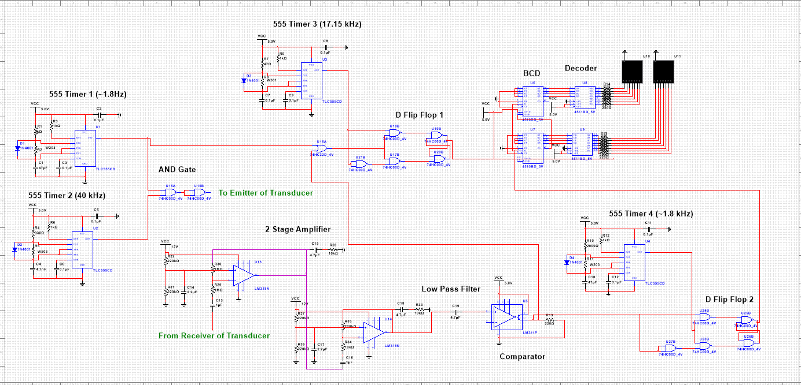
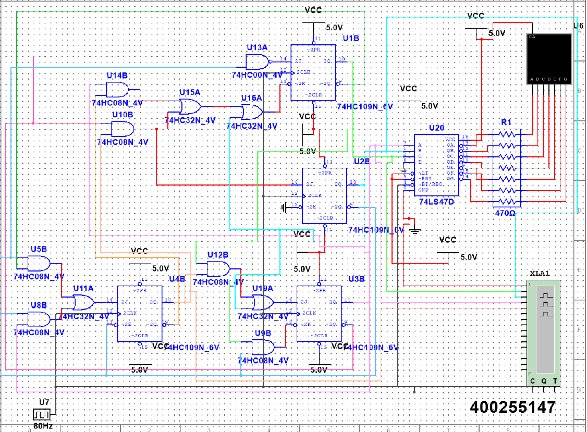
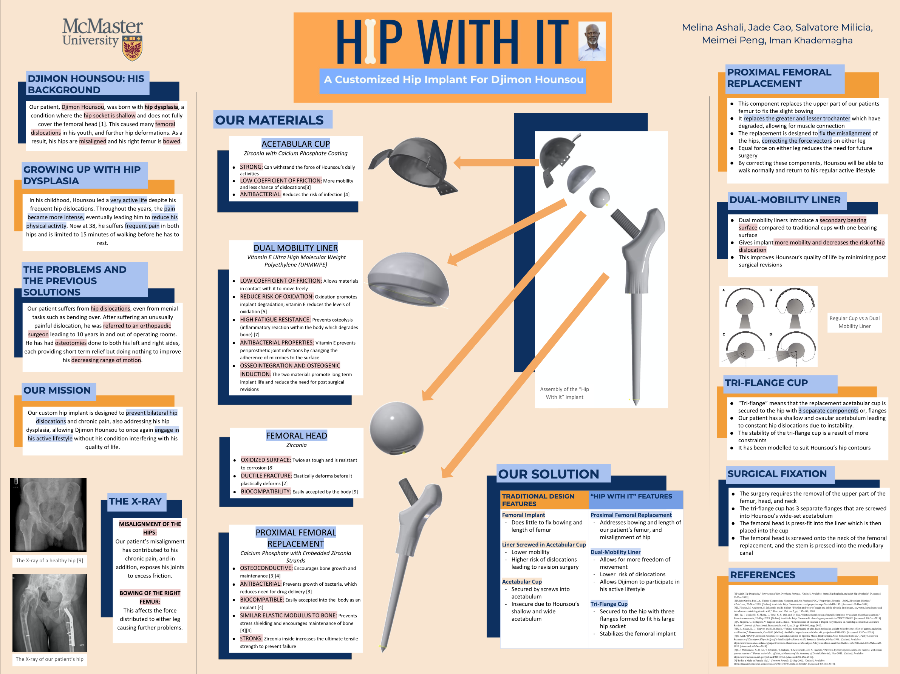

Jade Cao
Engineering Physics and Biomedical Engineering Co-op Student
Academic Projects
Ultrasonic Range Finder Design Project · Circuits with Non-Linear and Active Components · Year 3
In this project, I worked with a group of students to design an Ultrasonic Range Finder utilizing many analog and digital electronic components, as well as a piezoelectric transducer! Some of these components include amplifiers, filters, 555 timers and counters. The circuit functionality was demonstrated utilizing NI multisim (the circuit design can be seen below). With extensive debugging using lab equipment such as oscilloscopes and wave form generators, the modular circuit was produced.
Sequential Logic Design Project · Analog and Digital Circuits · Year 2
For this project, I was able to design and produce a sequential logic circuit to cycle through my 9-digit student number. With logic optimization, simplifications were made and the circuit was simulated using NI multisim. The final deliverable was a functional circuit built with base-level electronics such as logic gates, JK flip-flops, and a 7-segment display!
Wearable Device · Health Solutions Design Project · Year 1
The "Stayin' Alive Driver Alertness Monitor" was designed and developed using a Raspberry Pi, pressure sensors, and a vibration motor! This device was developed with the intent to minimize driving incidents due to fatigue by having drivers wear an interactive device which was based on reaction time. The housing unit was modelled using Autodesk Inventor. The design was presented and demonstrated at a design expo!
Project demonstration can be seen here
Custom Hip Implant · Health Solutions Design Project · Year 1
For this project a customized hip implant was designed based on a case study for a patient with hip dysplasia. Desgin parameters were optimized with python, and the design was modelled with Autodesk Inventor. The final poster is seen below which was presented at a showcase!
Relevant Courses
View my transcript here
- Analog and Digital Circuit
- Circuits with Non-Linear and Active Components
- Embedding and Programming a Micro-Controller
- Numerical Methods for Engineering
- Computational Mechanics
- Computational Multiphysics